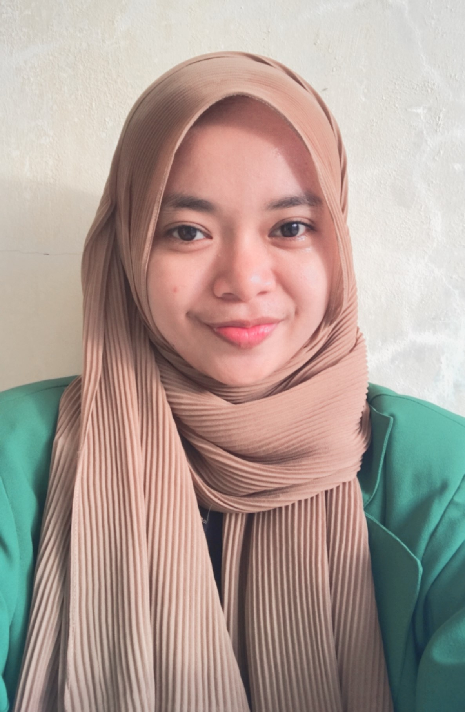

Fadilah Suryani Hasibuan

Domisili
Jl.Hidayah Lor.Teratai Blok.1 P.Sicanang Medan, Indonesia
email:
suryanifadilah411@gmail.com
Summary
Seorang Mahasiswa Jurusan Teknik Informatika Universitas Malikussaleh yang
memiliki motivasi tinggi untuk mencoba hal baru. saya memiliki kemampuan
pemahaman dalam menggunakan seperti C++, Pyhton, Delphi dsb.
Organizational Experience
April 2019 - Januari 2020
- Mengikuti Kursus Komputer
September 2021 - Sekarang
Mengikuti :
- Menjadi Peserta Praktek (Peusijuk Rakan Aneuk Teknik)
- Menjadi Peserta Informatics Study Camp V
Desember 2021 - Sekarang
Kepanitiaan :
- Panitia ThanksGiving IMKM
- Panitia Musyawarah Besar (Mubes) IMKM
- Panitia Rapat Kerja (Raker) IMKM
- Panitia Temu Ramah IMKM
- Panitia Dies Natalis 19 Informatika
- Panitia Malam Keakraban 2022 (Makrab) IMKM
- Panitia IMKM Cup 3
Desember 2022 - Sekarang
- Mengikuti Himpunan Mahasiswa Islam (HMI)
Pendidikan
- SMP Muhammadiyah 06 Belawan
- SMA Hang Tuah 01 Belawan
- Universitas Malikussaleh